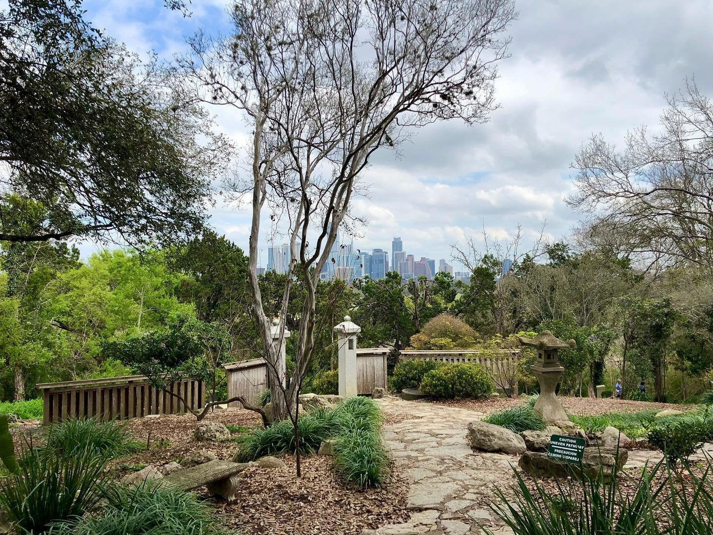

<!DOCTYPE html>
<html lang="en">
    <link rel="preconnect" href="https://fonts.googleapis.com">
    <link rel="preconnect" href="https://fonts.gstatic.com" crossorigin>
    <link href="https://fonts.googleapis.com/css2?family=Work+Sans&display=swap" rel="stylesheet">
    <link rel="preconnect" href="https://fonts.googleapis.com">
<link rel="preconnect" href="https://fonts.gstatic.com" crossorigin>
<link href="https://fonts.googleapis.com/css2?family=Work+Sans:wght@700&display=swap" rel="stylesheet">
    <script src="myscript.js"></script>
    <link rel="stylesheet" href="styles.css"></html>
    <meta charset="UTF-8">
    <meta http-equiv="X-UA-Compatible" content="IE=edge">
    <meta name="viewport" content="width=device-width, initial-scale=1.0">
    <title>Document</title>
</head>
    <!--The personal artwork piece will be something similar to an interactive pudding.cool page. Current themes and their cooresponding personal piece ideas:
    Theme: Presenting the idea of deforestation as an actual war on nature, idk. First artwork could be an American conservation painting from the 1800's, the next could be something modern like the deforestization of Brazil or the firestick farming practices of Australia. 
    The third photo could be a more modern tycoon or anti-tycoon type game where you have to fight deforestization. Then, the fourth could represent the benefits of preserving nature in our modern day.-->
    
    <!--Wave guy is 2327 × 2980-->
    <!--Zilker is 1440 × 1080-->
        <a href="index.html">
            
        </a>
        <nav>
            <ul class="tabs">
                <a class="linkButton "href="index.html">Home</a>
                <a class="linkButton "href="dance.html">Dance</a>
                <a class="linkButton "href="music.html">Music</a>
                <a class="linkButton "href="earthwork.html">Earthwork</a>
                <a class="linkButton "href="performanceArt.html">Performance Art</a>
                <a class="linkButton "href="scratch.html">Interactive Art</a>
            </ul>
        </nav>
            
            <div id="waveText" class="generalText">
                Welcome to the final project performance! With generous grants from UMass and donations from groundbreaking artists from across the world, we've curated a collection of 5 artworks representing man's war with nature, and the few brave souls who seek to preserve its beauty.
                <br>
                <br>
                This website serves as a catalog for these 5 brilliant pieces, teaching their history and greater meaning in regards to humanity's war on nature. I chose this theme because the vast majority of people are not on the supposed "front lines" of this conflict. They don't see the damage we are causing, and therefore feel little need to preserve nature. There have been some efforts to preserve nature, such as the creation of the National Park Service in the US or many European cities incorporating greenery into their cities, but these efforts in the grand scheme of things are few and far between. The purpose of this exhibit is to transport the content, first-world citizens who view it to the front lines of our war against nature, to show them the destruction we are causing to our environment. 
                <br>
                <br>
                The interactive piece, personally created by the curator, takes things a step further and transforms the viewer into an activist fighting to preserve a small forest from being destroyed. I (the curator) believe that viewers should not only walking away understanding our war with nature, but with an understanding of what we can do to stop it.
            </div>
            <div id="gardensText">
                
                <!--your program describes the space your imagined evening of art takes place in-->
                This art exhibit will take place in my home city, which has actually done a relatively good job at preserving greenery in and around its downtown area. The <a href="https://zilkergarden.org/">Zilker Botanical Gardens</a> sets an example for how cities can preserve greenery in their downtown areas. This publicly funded park focuses on growing plants native to Austin and hosts conservancy groups and events. More specifically, the exhibit will be hosted outdoors with accomodations such as tents and water-cooled fans in place to shelter the exhibit and keep our guests cool in the Austin Spring.
            </div>
    </body>
</html>